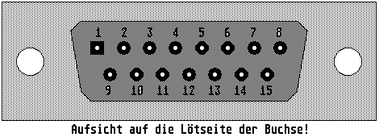

Previous
Next
TOC
Die Pinbelegung des AUI-Ports
Ethernet 15-polige Sub-D-Buchse:
1:
nicht belegt (Logic Ref.)
2:
CD+ (Collision Detect +)
3:
TX+ (Transmit +)
4:
nicht belegt (Logic Ref.)
5:
RX+ (Receive +)
6:
Masse (GND)
7:
nicht belegt (Not Connected)
8:
nicht belegt (Logic Ref.)
9:
CD- (Collision Detect -)
10: TX- (Transmit -)
11: nicht belegt (Logic Ref.)
12: RX- (Receive-)
13: l2Volt (für externen Transceiver)
14: nicht belegt (Logic Ref.)
15: nicht belegt (Not Connected)

Kapitel Die Pinbelegung des AUI-Ports, Seite 1